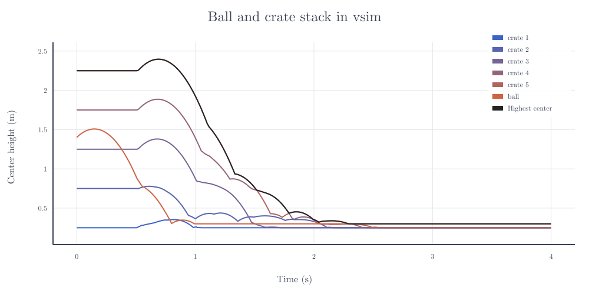

External simulators through ALE and vsim
The Arcade Learning Environment exposes Tetris as a discrete-action environment. Datamunge’s frame stack converts the emulator screen into the four observations used by a DQN. The seeded random policy runs until termination and records every second agent action.
The second experiment loads the upstream box-stack scene directly into vsim and advances its Jolt physics world at 120 Hz. It has a static floor, five dynamic crates and a moving ball. The height trace tracks the highest dynamic body’s center as the stack collapses.
SDK setup
From a Datamunge C++ docs shell with zlib, ffmpeg and a Vulkan driver available, build the
two SDKs from the upstream checkout. The vsim-renderer pkg-config entry
supplies its include and link flags. The scene path selects the original
box stack from the checkout.
upstream="$HOME/projects/tflow_examples"
ale=$(nix build --no-link --print-out-paths "$upstream#ale")
vsim=$(nix build --no-link --print-out-paths "$upstream#vsim-sdk")
export ALE_ROM_DIR="$ale/share/ale/roms"
export DM_BOX_STACK_SCENE="$upstream/data/vsim/box_stack.json"
export PKG_CONFIG_PATH="$vsim/lib/pkgconfig:${PKG_CONFIG_PATH:-}"
vsim_flags=$(pkg-config --cflags --libs vsim-renderer | sed -E 's@ /nix/store/[^ ]+-glibc-[^ /]+/lib/libm\.so@@g; s@ -Wl,-rpath,/nix/store/[^ ]+-glibc-[^ /]+/lib@@g')
export DM_EXTERNAL_ENV_FLAGS="$vsim_flags -std=c++23 -DDM_EXTERNAL_ENV_SDKS -I$ale/include $ale/lib/libale.a -lm -lz"
mep-mepml run docs/mepml/nn/6_deep_reinforcement_learning/6.1_environments/external_envs.mepmlComplete preserved source protocol
Regular docs builds use the captured plot and clips. The optional SDK-enabled run regenerates them.
#include <dm/dm.hpp>
#if defined(DM_EXTERNAL_ENV_SDKS)
#include <vsim/io.hpp>
#include <vsim/physics.hpp>
#include <vsim/renderer.hpp>
#endif
// Editable workflow support: checks.hpp
// Small runtime checks used by the executable nn examples. They stay on in
// Release builds and make the example exit nonzero on failure, so `just
// run-all-nn` doubles as a regression test against the recorded TF numbers.
// Editable workflow support: runtime.hpp
// Bounded demonstrations by default; opt into convergence experiments explicitly.
namespace example_runtime {
inline bool Full() {
const char* value = std::getenv("DATAMUNGE_EXAMPLES_FULL");
return value && std::string(value) == "1";
}
template <typename T> T Limit(T requested, T quick_limit) {
return Full() ? requested : std::min(requested, quick_limit);
}
inline void Describe() {
if (!Full())
std::cout << "Quick demonstration: bounded training; convergence metrics require "
"DATAMUNGE_EXAMPLES_FULL=1.\n";
}
} // namespace example_runtime
namespace check {
inline void Require(bool condition, const std::string& message) {
if (!condition) throw std::runtime_error(message);
}
// A short demonstration checks execution, derivatives and persistence; reaching
// a published accuracy/return requires the separately requested full schedule.
inline void TrainingQuality(bool condition, const std::string& message) {
if (example_runtime::Full()) Require(condition, message);
else std::cout << " full-training quality check deferred: " << message << '\n';
}
inline void Near(double actual, double expected, double tolerance, const std::string& message) {
if (!std::isfinite(actual) || !std::isfinite(expected) || std::abs(actual - expected) > tolerance)
throw std::runtime_error(message + ": got " + std::to_string(actual) + ", expected " + std::to_string(expected));
}
/// Expects `f` to throw; returns the message.
template <typename F>
std::string Throws(F&& f, const std::string& message) {
try {
f();
} catch (const std::exception& e) {
return e.what();
}
throw std::runtime_error(message + ": expected an exception");
}
} // namespace check
inline void Header(const std::string& title) {
const std::size_t pad = title.size() < 60 ? 60 - title.size() : 0;
std::cout << "\n== " << title << " " << std::string(pad, '=') << "\n";
}
// Editable workflow support: rl/ale_env.hpp
// datamunge::nn port of tflow_examples src/common/rl/ale_env.h.
//
// ALE is not a datamunge dependency (the plan keeps emulators in the examples
// repo), so this header splits tflow's AtariEnv in two:
// - AtariFrameStack: the DQN preprocessing (max-pool of the last two frames,
// box-filter resize to 84x84, a stack of the last 4 frames, scaling to
// [0, 1]), plain C++ with no emulator; same code as tflow's private helpers.
// - AtariEnv: the ALE-backed environment, identical to tflow's, compiled only
// when <ale/ale_interface.hpp> is on the include path (then link libale).
// DATAMUNGE_EXAMPLES_HAVE_ALE says which.
// FindRom also looks in ~/projects/tflow_examples/data/roms.
//
// Original comment:
// Atari 2600 games through the Arcade Learning Environment, with the
// standard DQN preprocessing (Mnih et al. 2015): frame skip with max-pooling
// over the last two frames, grayscale, resize to 84x84, a stack of the last
// 4 frames, random no-ops at reset, and optional reward clipping. The ROM
// is looked up in data/roms/ and then $ALE_ROM_DIR (the flake points that
// at the free Tetris ROM shipped with ALE).
#if defined(DM_EXTERNAL_ENV_SDKS)
#define DATAMUNGE_EXAMPLES_HAVE_ALE 1
#include <ale/ale_interface.hpp>
#include <ale/common/Log.hpp>
#else
#define DATAMUNGE_EXAMPLES_HAVE_ALE 0
#endif
// Editable workflow support: rl/env.hpp
namespace rl {
using datamunge::rl::environments::Obs;
using datamunge::rl::environments::Action;
using datamunge::rl::environments::ActionSpace;
using datamunge::rl::environments::StepResult;
using datamunge::rl::environments::Env;
using datamunge::rl::environments::EnvBase;
using datamunge::rl::environments::Transition;
using datamunge::rl::environments::TabularEnv;
}
namespace rl {
// Directories searched for <game>.bin, in order.
inline std::vector<std::string> RomDirs() {
std::vector<std::string> dirs = {"data/roms"};
if (const char* d = std::getenv("TFLOW_DATA_DIR")) dirs.push_back(std::string(d) + "/roms");
if (const char* d = std::getenv("ALE_ROM_DIR")) dirs.push_back(d);
if (const char* h = std::getenv("HOME")) dirs.push_back(std::string(h) + "/projects/tflow_examples/data/roms");
return dirs;
}
inline std::string FindRom(const std::string& game) {
for (const std::string& dir : RomDirs()) {
const std::string p = dir + "/" + game + ".bin";
if (std::filesystem::exists(p)) return p;
}
throw std::runtime_error("ROM " + game + ".bin not found in data/roms/ or $ALE_ROM_DIR");
}
struct AtariOptions {
int frame_skip = 4;
bool clip_rewards = false;
int noop_max = 30;
int max_frames = 27000; // 108k emulator frames at frame skip 4: Gymnasium's limit
float repeat_action_probability = 0.25f; // sticky actions
};
// The DQN frame pipeline over raw grayscale screens of raw_w x raw_h.
using dm::rl::environments::AtariFrameStack;
#if DATAMUNGE_EXAMPLES_HAVE_ALE
class AtariEnv : public Env {
public:
static constexpr int kSize = AtariFrameStack::kSize, kStack = AtariFrameStack::kStack;
using Options = AtariOptions;
AtariEnv(const std::string& game, Options opt = AtariOptions()) : game_(game), opt_(opt) {
ale::Logger::setMode(ale::Logger::Error); // no ROM banner / "Sending Reset..." chatter
ale_.setInt("random_seed", 0);
ale_.setFloat("repeat_action_probability", opt.repeat_action_probability);
ale_.setInt("frame_skip", 1); // skipping is done here so frames can be max-pooled
ale_.loadROM(FindRom(game));
actions_ = ale_.getMinimalActionSet();
raw_w_ = static_cast<int>(ale_.getScreen().width());
raw_h_ = static_cast<int>(ale_.getScreen().height());
frames_ = AtariFrameStack(raw_w_, raw_h_);
}
std::string name() const override { return "Atari(" + game_ + ")"; }
int obs_size() const override { return kStack * kSize * kSize; }
ActionSpace action_space() const override { return ActionSpace::Discrete(static_cast<int>(actions_.size())); }
void Seed(uint64_t seed) override {
rng_.seed(seed);
ale_.setInt("random_seed", static_cast<int>(seed));
ale_.loadROM(FindRom(game_));
}
int max_steps() const override { return opt_.max_frames; }
int lives() { return ale_.lives(); }
std::vector<std::string> action_names() const override {
static const char* names[] = {"NOOP", "FIRE", "UP", "RIGHT", "LEFT", "DOWN", "UPRIGHT", "UPLEFT", "DOWNRIGHT", "DOWNLEFT",
"UPFIRE", "RIGHTFIRE", "LEFTFIRE", "DOWNFIRE", "UPRIGHTFIRE", "UPLEFTFIRE", "DOWNRIGHTFIRE", "DOWNLEFTFIRE"};
std::vector<std::string> out;
for (auto a : actions_) out.push_back(names[static_cast<int>(a)]);
return out;
}
// The current raw RGB screen (raw_w x raw_h), for videos.
const std::vector<unsigned char>& rgb() {
ale_.getScreenRGB(rgb_);
return rgb_;
}
int raw_width() const { return raw_w_; }
int raw_height() const { return raw_h_; }
// The most recent preprocessed 84x84 frame (0..255), for inspection.
const std::vector<unsigned char>& last_frame() const { return frames_.last_frame(); }
StepResult step(const Action& action) override {
StepResult r;
float reward = 0;
std::vector<unsigned char> prev, cur;
for (int k = 0; k < opt_.frame_skip; ++k) {
reward += static_cast<float>(ale_.act(actions_[action.discrete]));
if (k == opt_.frame_skip - 2) ale_.getScreenGrayscale(prev);
if (ale_.game_over()) break;
}
ale_.getScreenGrayscale(cur);
AtariFrameStack::MaxPool(cur, prev);
frames_.PushFrame(cur);
r.obs = frames_.StackedObs();
r.reward = opt_.clip_rewards ? (reward > 0 ? 1.f : (reward < 0 ? -1.f : 0.f)) : reward;
raw_reward_ = reward;
r.terminated = ale_.game_over();
r.truncated = !r.terminated && ++steps_ >= opt_.max_frames;
return r;
}
float last_raw_reward() const { return raw_reward_; }
protected:
Obs Reset() override {
ale_.reset_game();
steps_ = 0;
frames_.Clear();
const int noops = opt_.noop_max > 0 ? static_cast<int>(rng_() % (opt_.noop_max + 1)) : 0;
for (int i = 0; i < noops; ++i) ale_.act(actions_[0]);
std::vector<unsigned char> g;
ale_.getScreenGrayscale(g);
for (int i = 0; i < kStack; ++i) frames_.PushFrame(g);
return frames_.StackedObs();
}
private:
std::string game_;
Options opt_;
ale::ALEInterface ale_;
ale::ActionVect actions_;
AtariFrameStack frames_;
std::vector<unsigned char> rgb_;
std::mt19937_64 rng_{0};
int raw_w_ = 0, raw_h_ = 0, steps_ = 0;
float raw_reward_ = 0;
};
#endif // DATAMUNGE_EXAMPLES_HAVE_ALE
} // namespace rl
namespace {
void AtariDemo() {
std::printf("#### ALE\n");
#if DATAMUNGE_EXAMPLES_HAVE_ALE
rl::AtariEnv env("tetris");
std::printf(" %s: raw screen %dx%d, %d-frame stack of 84x84 -> obs of %d floats, %s\n", env.name().c_str(), env.raw_width(),
env.raw_height(), rl::AtariEnv::kStack, env.obs_size(), env.action_space().ToString().c_str());
std::printf(" minimal action set:");
for (const std::string& a : env.action_names()) std::printf(" %s", a.c_str());
std::printf("\n");
std::mt19937_64 rng(0);
env.reset(0);
dm::cad::RenderResult frame;
frame.width=env.raw_width()*3;
frame.height=env.raw_height()*3;
frame.rgba.assign(std::size_t(frame.width)*frame.height*4,255);
const std::string clip="external_envs_tetris_random.mp4";
dm::cad::VideoWriter writer("build/"+clip,frame.width,frame.height,30);
float ret = 0;
int steps = 0;
while (true) {
rl::StepResult r = env.step(env.action_space().Sample(rng));
ret += r.reward;
++steps;
if (steps%2==0 && writer.frames_written()<450) {
const auto& rgb=env.rgb();
for (int y=0;y<frame.height;++y)
for (int x=0;x<frame.width;++x) {
const auto source=3*((y/3)*env.raw_width()+x/3);
const auto target=4*(y*frame.width+x);
std::copy_n(rgb.data()+source,3,frame.rgba.data()+target);
}
writer.append(frame);
}
if (r.done()) break;
}
writer.finish();
std::filesystem::copy_file("build/"+clip,"figures/"+clip,
std::filesystem::copy_options::overwrite_existing);
std::print(" Recorded {} Atari frames\n",writer.frames_written());
std::printf(" random agent: %d agent steps (%d emulator frames), score %.0f, game over = %d\n", steps, steps * 4, ret, env.lives() == 0);
// The preprocessed frame the agent actually sees.
std::printf(" last 84x84 frame, downsampled 4x for display (. < 64, : < 128, + < 192, # otherwise):\n");
const auto& f = env.last_frame();
for (int y = 0; y < 84; y += 4) {
std::printf(" ");
for (int x = 0; x < 84; x += 2) {
const int v = f[y * 84 + x];
std::printf("%c", v < 64 ? '.' : v < 128 ? ':' : v < 192 ? '+' : '#');
}
std::printf("\n");
}
check::Require(env.raw_width() == 160 && env.raw_height() == 210, "the Atari screen is 160x210");
check::Require(steps > 0 && env.obs_size() == 4 * 84 * 84, "a random Tetris game runs to the end");
#else
std::printf(" ALE is not built in (see the header): the Atari demo is skipped.\n");
try {
std::printf(" tetris ROM: %s\n", rl::FindRom("tetris").c_str());
} catch (const std::exception& e) {
std::printf(" %s\n", e.what());
}
#endif
}
void VsimDemo() {
#if defined(DM_EXTERNAL_ENV_SDKS)
const char* scene_path=std::getenv("DM_BOX_STACK_SCENE");
if (!scene_path || !*scene_path) throw std::runtime_error("set DM_BOX_STACK_SCENE");
auto scene=vsim::load_scene(scene_path);
vsim::PhysicsWorld world(scene);
const auto entities=scene.entities();
std::vector<vsim::EntityId> bodies;
for (const auto id:entities) {
const auto& entity=scene.get(id);
if (entity.rigid_body && entity.rigid_body->motion=="dynamic") bodies.push_back(id);
}
check::Require(entities.size()==8 && world.body_count()==7 &&
world.joint_count()==0 && bodies.size()==6,"unexpected scene inventory");
std::vector<double> time, height;
std::vector<std::vector<double>> tracks(bodies.size());
constexpr int width=640, frame_height=400;
vsim::Renderer renderer({.width=width,.height=frame_height,.offscreen=true});
vsim::RenderView view;
view.transform.position={2.6f,2.2f,4.8f};
view.transform.rotation=glm::quatLookAtRH(
glm::normalize(glm::vec3(.5f,.9f,0.f)-view.transform.position),glm::vec3(0,1,0));
view.camera.vertical_fov=42;
const std::string clip="external_envs_box_stack.mp4";
dm::cad::VideoWriter writer("build/"+clip,width,frame_height,30);
vsim::Image image{};
dm::cad::RenderResult frame;
frame.width=width;
frame.height=frame_height;
for (int step=0;step<=480;++step) {
if (step) world.step(1./120);
if (step>0 && (step-1)%4==0) {
if (!renderer.draw(scene,&view)) throw std::runtime_error("vsim frame rendering failed");
renderer.capture(image);
frame.rgba.swap(image.rgba);
writer.append(frame);
frame.rgba.swap(image.rgba);
}
double top=0;
for (std::size_t j=0;j<bodies.size();++j) {
const double y=scene.get(bodies[j]).transform.position.y;
tracks[j].push_back(y);
top=std::max(top,y);
}
time.push_back(step/120.);
height.push_back(top);
}
writer.finish();
std::filesystem::copy_file("build/"+clip,"figures/"+clip,
std::filesystem::copy_options::overwrite_existing);
std::print(" Recorded {} vsim frames\n",writer.frames_written());
check::Require(std::abs(height.front()-2.25)<1e-5 && std::abs(height.back()-.30)<.01,
"unexpected box-stack heights");
std::print("vsim: {} entities, {} rigid bodies, {} joints\n",entities.size(),
world.body_count(),world.joint_count());
std::print(" 480 steps at 120 Hz, highest dynamic center {:.2f} -> {:.2f} m\n",
height.front(),height.back());
auto plot=dm::graphics::RPlot::create();
for (std::size_t j=0;j<bodies.size();++j)
plot.lines(time,tracks[j],scene.get(bodies[j]).name,{60+int(j)*29,100,200-int(j)*26});
plot.lines(time,height,"Highest center",{35,35,35})
.title("Ball and crate stack in vsim").x_label("Time (s)").y_label("Center height (m)")
.size(1000,500).save_svg("build/external_envs_box_stack.svg");
std::filesystem::copy_file("build/external_envs_box_stack.svg","figures/external_envs_box_stack.svg",
std::filesystem::copy_options::overwrite_existing);
#else
std::puts("vsim playback requires the optional SDK");
#endif
}
} // namespace
int main() {
try {
std::filesystem::create_directories("build");
std::filesystem::create_directories("figures");
AtariDemo();
VsimDemo();
} catch (const std::exception& e) {
std::cerr << "FAILED: " << e.what() << "\n";
return 1;
}
return 0;
}
#### ALE
Atari(tetris): raw screen 160x210, 4-frame stack of 84x84 -> obs of 28224 floats, Discrete(5)
minimal action set: NOOP FIRE RIGHT LEFT DOWN
Recorded 273 Atari frames
random agent: 546 agent steps (2184 emulator frames), score 0, game over = 1
last 84x84 frame, downsampled 4x for display (. < 64, : < 128, + < 192, # otherwise):
..........................................
::::::::::::::::::::::::::::::::::::::::::
..........................................
......:::::::::::........:###.###.###.###.
......:::++::::::........:#.#.#.#.#.#.#.#.
......:::::::::::........:#.#.#.#.#.#.#.#.
......:::::+:::::........:###.###.###.###.
......:::::+:::::.........................
......:::::+:::::.........................
......:::::+:::::.........................
......::::+::::::.........................
......::::+::::::.........................
......::::+::::::.........................
......:::++::::::.........................
......::+++#:::::.........................
......::+++#::::#.........................
......::+:+#::###.........................
......::::+++:::+.........................
......::++:+:::+:.........................
......::++++++:++.........................
......:+++++++++:.........................
Recorded 120 vsim frames
vsim: 8 entities, 7 rigid bodies, 0 joints
480 steps at 120 Hz, highest dynamic center 2.25 -> 0.30 mRecorded diagnostics
